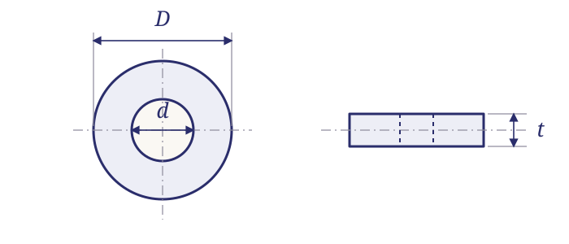

// TECHNICAL RESOURCES
Washers.
A family reference for specification-controlled hardware. Identify the relevant series and the details needed to source the required part.
// DIMENSION GUIDE
Washer inside diameter, outside diameter and thickness

Schematic only; not to scale. Letter labels are keys for this illustration. Use the applicable part specification for dimensions, tolerances and measurement conventions.
// IDENTIFICATION
Identify the washer function before comparing size.
Flat washers, tooth lock washers and helical split lock washers perform different roles. A common nominal screw size does not make these types equivalent.
AN960 and NAS1149 have a documented standard relationship. MS35333 and MS35335 are different tooth-lockwasher families; neither is simply a renamed flat washer.
// REFERENCE TABLE
Series in this family
No matching entries. Clear the filters or try a shorter search.
| Series | Product description | Family | Resource |
|---|---|---|---|
| AN960 | Flat washers | Washers | Read guide → |
| AN970 | Flat washers | Washers | Family reference → |
| MS15795 | Flat washers | Washers | Read guide → |
| MS27183 | Flat washers | Washers | Family reference → |
| MS35333 | Internal tooth lock washers | Washers | Family reference → |
| MS35335 | External tooth lock washers | Washers | Family reference → |
| MS35338 | Regular helical spring lock washers | Washers | Read guide → |
| NAS620 | Reduced-outside-diameter flat washers | Washers | Read guide → |
| NAS1149 | Flat washers | Washers | Read guide → |
| NAS1676 | Hi-collar helical spring lock washers | Washers | Read guide → |
// PREPARE AN RFQ
What to confirm on the drawing
Inside diameter; outside diameter; thickness; flat/locking type; material; finish; complete designation.
- Complete designation, including all material, finish and locking suffixes.
- Quantity, required delivery date and controlling drawing or specification issue.
- Required certificates, source restrictions and lot traceability.
// REFERENCE SCOPE
Reference scope
The table groups hardware by catalog family. It does not certify dimensions or current stock. For a document-level status finding, use the cross-reference page; for a dimensional table, use the linked guide.
// SOURCE WITH WEBSON
Have a part number or bill of material?
Send the complete designation, quantity, required delivery date and documentation requirements. Webson will review your requirement for quotation.